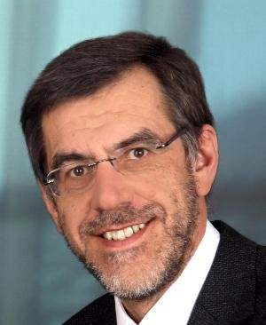

Time and Business Process Management

Johann Eder
Processes have been successfully introduced for modeling dynamic phenomena in many areas like business, production, health care, etc. Many of these applications require to adequately deal with temporal aspects. Process models need to express temporal durations, temporal constraints like allowed time between events, and deadlines. For checking the correctness of process definitions with temporal constraints, different notions and algorithms have been developed. Schedules for the execution of processes can be computed and proactive time management supports process managers to avoid time failures during the execution of a process. We present an overview of the problems and the techniques for treating time in business processes and discuss some new approaches.
Johann Eder is full professor for Information and Communication Systems in the Department of Informatics-Systems of the Alpen-Adria Universität Klagenfurt, Austria. From 2005-2013 he served as Vice President of the Austrian Science Funds (FWF). He held positions at the Universities of Linz, Hamburg and Vienna and was visiting scholar at AT&T Shannon Labs, NJ.
Johann Eder has contributed to workflow systems and business process management for 2 decades, in particular in the area of workflow systems languages and architectures, exception handling, time management, and data management. His research led to the development of the commercial workflow management systems altavistaWorks and @enterprise.
Johann Eder published more than 160 papers in peer reviewed international journals and conference proceedings. He chaired resp. served in numerous program committees for international conferences and as editor and referee for international journals. In particular, he acted as general chair / PC chair for CAiSE, ADBIS, BPM, CoopIS, and DAWAK conferences.